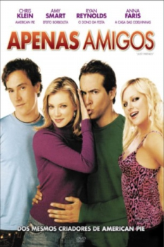

Apenas Amigos (2005)


He loves her. She loves him not.

Avaliação (TMDb):


6.2/10 (1.2K votos)
Avaliação (Usuário):
Outro Título:Just Friends (Título Original)
País:Canada, 96 minutos
Idiomas falados:Inglês, Português
Gênero(s):Comédia, Romance
Diretor(s):Roger Kumble
Codec:MPEG-2 (DVD)
Número: 600
Sinopse:
Um homem de 28 anos, vê-se frente a frente com a antiga e grande paixão da sua terra natal, que no passado o rejeitou, querendo apenas ser sua amiga.
Elenco:
Ryan Reynolds, Amy Smart, Anna Faris, Chris Klein, Chris Marquette, Julie Hagerty, Amy Matysio, Giacomo Beltrami, Fred Ewanuick, Wendy Anderson
Tipo de mídia: DVD5,
Legendas: Inglês, Português
Alugado: Não
Tela: 1.85:1